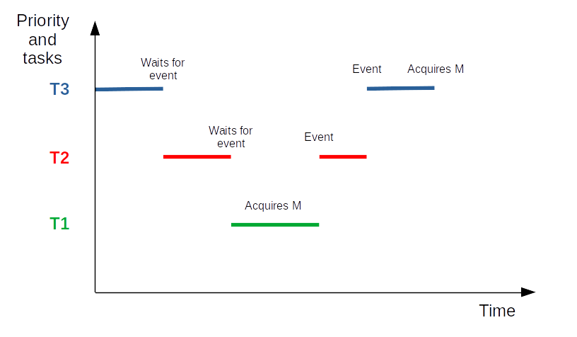
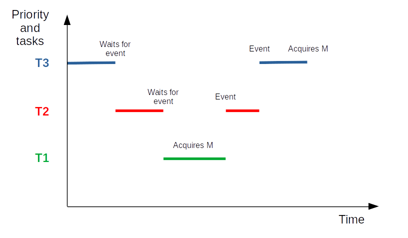

Concurrency control
Practice session 12
Sharing data bug
- Purpose: exhibit a possible problem when sharing data between tasks
- What to do: follow the instructions provided by the
embedded-systems-for-ML/practice-sessions/12-Shared-structure-bug/README.mdfile
In real life (of an embedded developer), concurrency problems are far less evident than here 🙂
They may occur on shared data, and on shared physical interfaces
In next slides, we see how to handle this class of problems.
Aim of concurrency control
Generate correct results for concurrent operations on same resource.
Shared resources
- Hardware: interfaces, peripherals
- Data structures used to transfer information between tasks, and between ISRs and tasks
Critical section
- Part of a program that must be protected from being executed by concurrent tasks
- In other words: it requires atomic execution
Simplest implementation
- For a system with only one processor: disabling/enabling interrupt(s)
But better to use the RTOS services described in next pages, in any case.
Mutex (MUTual EXclusion)
An object which:
- Guards a resource
- Can be imagined as containing a token
- A task which wants to access a given resource requests the token from the mutex:
- If it is available: OK
- If it is not available: the task stays blocked on the mutex until the token is available or a timeout occurs
- A task which has obtained the token must release it once it stops accessing the resource
This is a cooperation agreement. Creating a mutex does not protect a resource from a task that would not use the mutex!
API example
mutex_handle_t mutex_create()status_t mutex_acquire(mutex_handle_t mh, timeout_t timeout)status_t mutex_release(mutex_handle_t mh)status_t mutex_delete(mutex_handle_t mh)
An ISR must not try to take a mutex. Because it must not wait!
Practice session 13
Shared structure and mutex
- Purpose: demonstrate how to use a mutex
- What to do: follow the instructions provided by the
embedded-systems-for-ML/practice-sessions/13-Shared-structure-mutex/README.mdfile
Potential problem
Context:
- A task T3, of high priority, shares a resource with T1, a task of low priority
- The resource is protected by a mutex, M
- A task T2, of medium priority, performs some continuous processing, and almost never waits for an event
Successive actions


 

- The highest priority task, T3, is executing. Then it waits for an event.
- The medium priority task, T2, can now execute. Then it waits for an event.
- The low priority task, T1, can now execute. Then it requests to acquire M, acquires it, and goes on executing.
- Event for T2 is received. The scheduler schedules T2.
- Event for T3 is received. The scheduler schedules T3. Then T3 requests to acquire M.
- But M is held by T1. So T3 enters blocked state. And only T2 can be scheduled.
- As T2 almost never waits for an event, T1 will not be able to run again, and won't be able to release M: T3 stays blocked. T2, of lower priority than T3, blocks T3.
Result
- T2, of lower priority than T3, runs, instead of T3, as if it was of higher priority
- This is the problem of priority inversion
A (partial) solution
- If a high priority task blocks while attempting to acquire a mutex that is currently held by a lower priority task, then the priority of the task holding the mutex is temporarily raised to that of the blocking task
- This is priority inheritance
- Does not entirely solve the problem. The real solution is a good system design
Note: the timeout of the take function may also help.
A real-life example of priority inversion
- In 1997, Pathfinder landed on Mars
- After some time, the spacecraft began experiencing system resets and loosing sensor data
- A remote (!) debug session found the source of the problem: priority inversion
Note: time transmission between Earth and Mars is between 4 min and 24 min.
Another potential problem
Context:
- Task T1 would like to acquire a first mutex, MA and then a second one, MB
- Task T2 would like to acquire MB and then MA
- T1 and T2 have the same priority
Successive actions


- T1 requests to acquire MA, and acquires it.
- T2 requests to acquire MB, and acquires it.
- T1 requests to acquire MB and stays blocked on it.
- T2 requests to acquire MA and stays blocked on it.
- Deadlock!
Solution
A good system design.
Note 1: the timeout of the take function may also help.
Note 2: we will see a possible solution easier to use in a next section.
Semaphore
- Guards a set of resources
- Contains a variable counting the number of free resources
- A task which wants to access one of the resources calls the semaphore take function. This decrements the variable
- At the end of the access, give must be called. This increments the variable
API example
sem_handle_t sem_create(int max_count, int initial_count)status_t sem_take(sem_handle_t sh, timeout_t timeout)status_t sem_give(sem_handle_t sh)status_t sem_delete(sem_handle_t sh)
An ISR must not try to take a semaphore. Because it must not wait!
Practise session 14
Using a semaphore
- Purpose: demonstrate how to use a semaphore
- What to do: follow the instructions provided by the
embedded-systems-for-ML/practice-sessions/14-Semaphore/README.mdfile
Mutex vs semaphore
- A mutex provides priority inheritance, a semaphore does not
- A mutex can be used recursively by a task
- A mutex must be released by the task which acquired it
- A mutex is used to guard a resource
- A semaphore is used to manage a set of resources or to count events